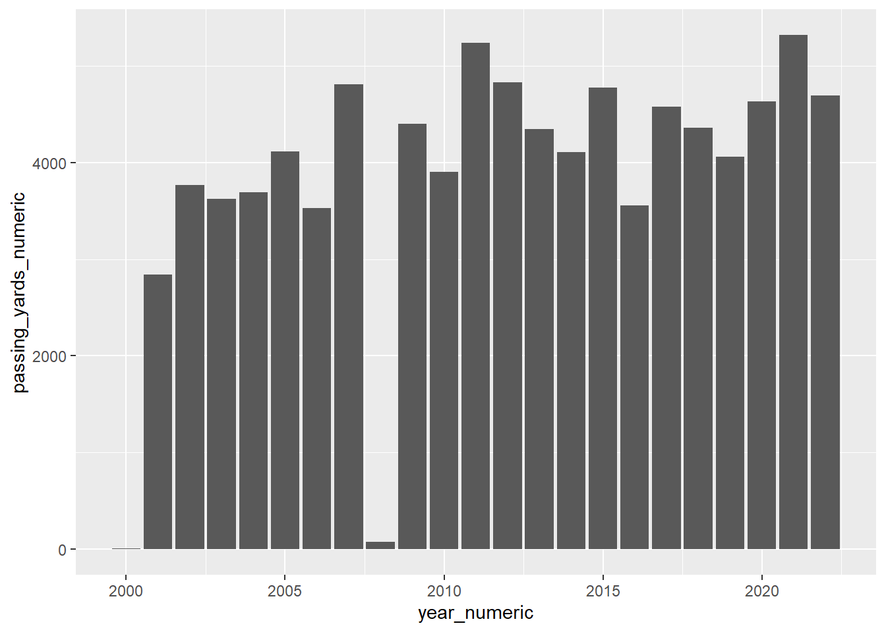

Chapter 7 Web Scraping
Install and load packages
Install here package to help manage file paths
Load tidyverse and here packages
## Warning: package 'rvest' was built under R version 4.3.3##
## Attaching package: 'rvest'## The following object is masked from 'package:readr':
##
## guess_encoding7.1 Scrape all paragraph text from a webpage
html_text cleans up html tags out of text
html_elements selects content within particular html tags. p is for paragraph.
## [1] "\n\n"
## [2] "A dolphin is an aquatic mammal in the clade Odontoceti (toothed whale). Dolphins belong to the families Delphinidae (the oceanic dolphins), Platanistidae (the Indian river dolphins), Iniidae (the New World river dolphins), Pontoporiidae (the brackish dolphins), and possibly extinct Lipotidae (baiji or Chinese river dolphin). There are 40 extant species named as dolphins.\n"
## [3] "Dolphins range in size from the 1.7-metre-long (5 ft 7 in) and 50-kilogram (110-pound) Maui's dolphin to the 9.5 m (31 ft) and 10-tonne (11-short-ton) orca. Various species of dolphins exhibit sexual dimorphism where the males are larger than females. They have streamlined bodies and two limbs that are modified into flippers. Though not quite as flexible as seals, they are faster; some dolphins can briefly travel at speeds of 29 kilometres per hour (18 mph) or leap about 9 metres (30 ft).[1] Dolphins use their conical teeth to capture fast-moving prey. They have well-developed hearing which is adapted for both air and water; it is so well developed that some can survive even if they are blind. Some species are well adapted for diving to great depths. They have a layer of fat, or blubber, under the skin to keep warm in the cold water.\n"
## [4] "Dolphins are widespread. Most species prefer the warm waters of the tropic zones, but some, such as the right whale dolphin, prefer colder climates. Dolphins feed largely on fish and squid, but a few, such as the orca, feed on large mammals such as seals. Male dolphins typically mate with multiple females every year, but females only mate every two to three years. Calves are typically born in the spring and summer months and females bear all the responsibility for raising them. Mothers of some species fast and nurse their young for a relatively long period of time. \n"
## [5] "Dolphins produce a variety of vocalizations, usually in the form of clicks and whistles.\n"7.2 Scrape a specific item from a webpage
Right-click and inspect a page to investigate how it’s structured.
Right-click an item and copy x-path
If the path has quotes in it, use alternative form of quotes (single instead of double or vis a versa)
/html/body/div/main/article/section/div/div/p[4]
all_text <- urloi |>
read_html() |>
html_element(xpath = "/html/body/div[2]/div/div[3]/main/div[3]/div[3]/div[1]/figure[1]/figcaption") |>
html_text()
all_text## [1] " A common bottlenose dolphin (Tursiops truncatus)"7.3 Ethics of web scraping
In the United States, web scraping is legal.
However, there are many illegal things you may do with the data you scraped, including copyright infringement.
Poor scraping design may also crash web servers through denial of service.
add /robots.txt to a web address to see what you are not supposed to crawl.
Web scrapers can add pauses into their code to detect scraping behavior. Rtweet was throttled and re-queried every 12 to 15 minutes.
7.4 Scrape data
Scrape data on Tom Brady from Wikipedia.
Scrape table-based text from a page
## {xml_nodeset (58)}
## [1] <table class="box-Very_long plainlinks metadata ambox ambox-style ambox- ...
## [2] <table class="infobox vcard" style="width: 25em; line-height: 1.2em;">\n ...
## [3] <table class="infobox" style="border-collapse:collapse; border-spacing:0 ...
## [4] <table class="infobox" style="border-collapse:collapse; border-spacing:0 ...
## [5] <table class="wikitable" style="text-align:center;"><tbody>\n<tr>\n<th r ...
## [6] <table class="box-Cleanup_reorganize plainlinks metadata ambox ambox-sty ...
## [7] <table class="wikitable" style="text-align:center">\n<caption>Pre-draft ...
## [8] <table class="wikitable"><tbody>\n<tr><th colspan="2">Legend\n</th></tr> ...
## [9] <table class="wikitable" style="text-align:center;"><tbody>\n<tr>\n<th r ...
## [10] <table class="wikitable" style="text-align:center;"><tbody>\n<tr>\n<th r ...
## [11] <table class="wikitable" style="text-align:center;"><tbody>\n<tr>\n<th r ...
## [12] <table class="col-begin" role="presentation"><tbody><tr><td class="col-b ...
## [13] <table class="wikitable">\n<caption>\n</caption>\n<tbody>\n<tr>\n<th>Yea ...
## [14] <table class="wikitable">\n<caption>\n</caption>\n<tbody>\n<tr>\n<th>Yea ...
## [15] <table class="nowraplinks mw-collapsible autocollapse navbox-inner" styl ...
## [16] <table class="nowraplinks mw-collapsible mw-collapsed navbox-inner" styl ...
## [17] <table class="nowraplinks mw-collapsible mw-collapsed navbox-inner" styl ...
## [18] <table class="nowraplinks mw-collapsible autocollapse navbox-inner" styl ...
## [19] <table class="nowraplinks mw-collapsible autocollapse navbox-inner" styl ...
## [20] <table class="nowraplinks mw-collapsible mw-collapsed navbox-inner" styl ...
## ...Hold on, scrape a specific table
reg_season <- urloi |>
read_html() |>
html_element(xpath = "/html/body/div[2]/div/div[3]/main/div[3]/div[3]/div[1]/table[7]") |>
html_table()
reg_season## # A tibble: 25 × 23
## Year Team Games Games Games Passing Passing Passing Passing Passing Passing
## <chr> <chr> <chr> <chr> <chr> <chr> <chr> <chr> <chr> <chr> <chr>
## 1 Year Team GP GS Reco… Cmp Att Pct Yds Y/A Lng
## 2 2000 NE 1 0 — 1 3 33.3 6 2.0 6
## 3 2001 NE 15 14 11–3 264 413 63.9 2,843 6.9 91
## 4 2002 NE 16 16 9–7 373 601 62.1 3,764 6.3 49
## 5 2003 NE 16 16 14–2 317 527 60.2 3,620 6.9 82
## 6 2004 NE 16 16 14–2 288 474 60.8 3,692 7.8 50
## 7 2005 NE 16 16 10–6 334 530 63.0 4,110 7.8 71
## 8 2006 NE 16 16 12–4 319 516 61.8 3,529 6.8 62
## 9 2007 NE 16 16 16–0 398 578 68.9 4,806 8.3 69
## 10 2008 NE 1 1 1–0 7 11 63.6 76 6.9 26
## # ℹ 15 more rows
## # ℹ 12 more variables: Passing <chr>, Passing <chr>, Passing <chr>,
## # Rushing <chr>, Rushing <chr>, Rushing <chr>, Rushing <chr>, Rushing <chr>,
## # Sacked <chr>, Sacked <chr>, Fumbles <chr>, Fumbles <chr>Summarize average
First you need unique column names!
You can make a list of new column names as follows: colnames(reg_season) <- c("Year", "Team", ... "LastVar")
Better solution: paste data in row 1 into the column names
Subset the first row using brackets [row(s), column(s)]
7.5 Cardinal sin of data science
Overwrite a dataset that you cannot get back. The solution to this is save a raw version of your data and work with a new version of the data. Please save an RDS file!
Paste with a sep option!
## [1] "Year Year" "Team Team" "Games GP" "Games GS" "Games Record"
## [6] "Passing Cmp" "Passing Att" "Passing Pct" "Passing Yds" "Passing Y/A"
## [11] "Passing Lng" "Passing TD" "Passing Int" "Passing Rtg" "Rushing Att"
## [16] "Rushing Yds" "Rushing Y/A" "Rushing Lng" "Rushing TD" "Sacked Sck"
## [21] "Sacked Yds" "Fumbles Fum" "Fumbles Lost"## # A tibble: 25 × 23
## `Year Year` `Team Team` `Games GP` `Games GS` `Games Record` `Passing Cmp`
## <chr> <chr> <chr> <chr> <chr> <chr>
## 1 Year Team GP GS Record Cmp
## 2 2000 NE 1 0 — 1
## 3 2001 NE 15 14 11–3 264
## 4 2002 NE 16 16 9–7 373
## 5 2003 NE 16 16 14–2 317
## 6 2004 NE 16 16 14–2 288
## 7 2005 NE 16 16 10–6 334
## 8 2006 NE 16 16 12–4 319
## 9 2007 NE 16 16 16–0 398
## 10 2008 NE 1 1 1–0 7
## # ℹ 15 more rows
## # ℹ 17 more variables: `Passing Att` <chr>, `Passing Pct` <chr>,
## # `Passing Yds` <chr>, `Passing Y/A` <chr>, `Passing Lng` <chr>,
## # `Passing TD` <chr>, `Passing Int` <chr>, `Passing Rtg` <chr>,
## # `Rushing Att` <chr>, `Rushing Yds` <chr>, `Rushing Y/A` <chr>,
## # `Rushing Lng` <chr>, `Rushing TD` <chr>, `Sacked Sck` <chr>,
## # `Sacked Yds` <chr>, `Fumbles Fum` <chr>, `Fumbles Lost` <chr>Can we graph Brady’s passing yards over time?
First remove line 1
brady_data_clean_types <- brady_data_clean |>
slice(-1) |>
filter(`Year Year` != "Career") |>
mutate(
passing_yards_numeric = as.numeric(str_remove(`Passing Yds`, ",")),
year_numeric = as.numeric(`Year Year`)
)